graph LR S["📡 Sensores"] -->|"dados"| M["🧠 MCU
ESP8266/ESP32"] M -->|"comandos"| A["⚙️ Atuadores"] M -.->|"MQTT/HTTP"| C["☁️ Nuvem"] style S fill:#8be9fd,color:#282a36 style M fill:#bd93f9,color:#282a36 style A fill:#50fa7b,color:#282a36 style C fill:#f1fa8c,color:#282a36
Revisão: Aula 12 — Bots Telegram/Discord
- ESP8266 + Wi-Fi conectado a APIs REST
- Polling HTTPS para o Telegram Bot API
- Comandos remotos: ler sensor, ligar atuador
- Limites: 1 sensor LDR + 1 LED no exemplo
⚡ Hoje: quais sensores e atuadores você tem à disposição para o seu projeto final?
Bloco 1: Revisão Rápida
Componentes que vocês já dominam — base para evoluir
LDR + DHT22 (Revisão)
- LDR: resistor que varia com a luz →
analogRead() - DHT22: temperatura + umidade digital
- Protocolo proprietário (1-wire-like)
- Precisão DHT22: ±0.5°C, ±2% UR
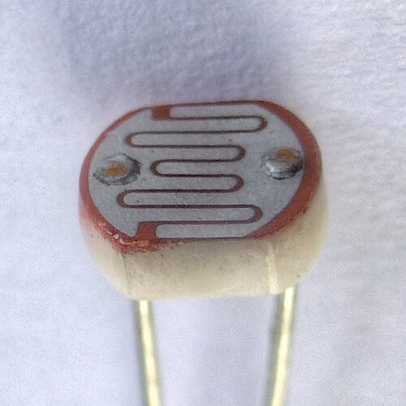
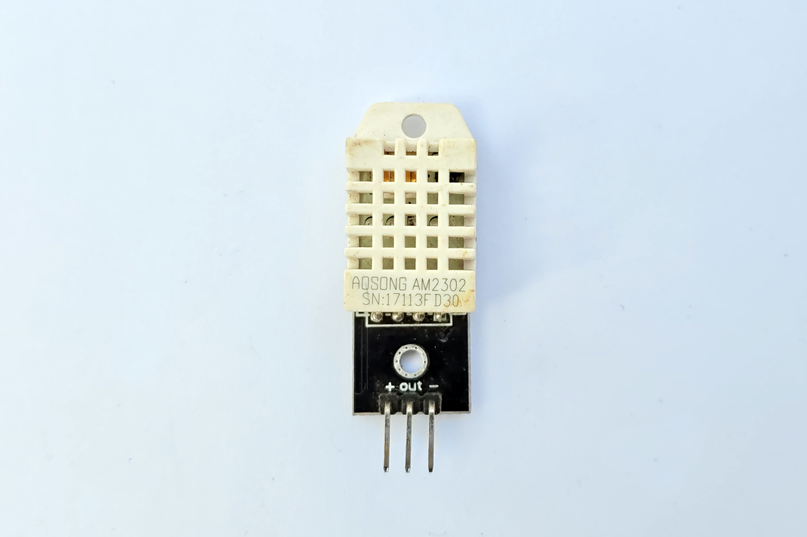
LCD I2C + Relé (Revisão)
- LCD 16x2 I2C: endereço 0x27 ou 0x3F
- Relé: switch eletromecânico para cargas AC/DC
- Relé garante isolação galvânica entre MCU e carga
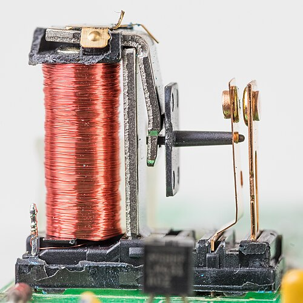
Motor DC + MOSFET (Revisão)
- MOSFET (IRLZ44N): gate recebe PWM do MCU
analogWrite()controla velocidade (0-255)- Diodo flyback protege contra EMF reversa
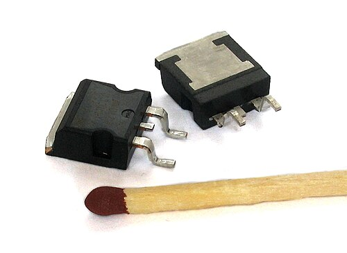
Bloco 2: Sensores de Temperatura
Alternativas ao DHT22 — quando precisão ou ambiente exigem mais
DS18B20 — Temperatura OneWire
- Protocolo OneWire (1 fio de dados)
- À prova d'água (sonda metálica)
- Precisão: ±0.5°C (faixa −55 a +125°C)
- Múltiplos sensores no mesmo barramento

TMP36 — Temperatura Analógica
- Saída analógica linear: 10 mV/°C
- Faixa: −40°C a +125°C
- Sem protocolo — direto no ADC
- Barato e simples, porém menos preciso (±2°C)
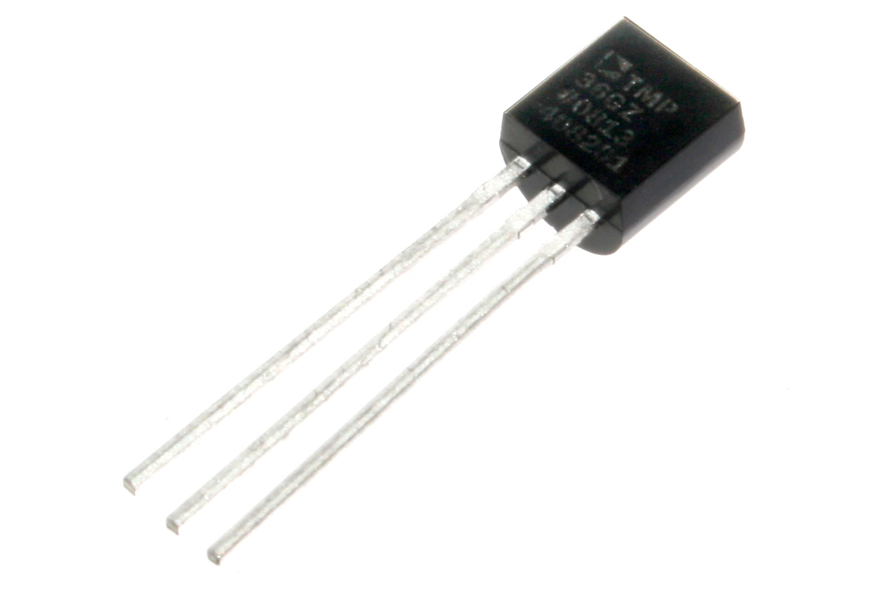
Comparação: Sensores de Temperatura
| Característica | DHT22 | DS18B20 | TMP36 |
|---|---|---|---|
| Protocolo | Proprietário | OneWire | Analógico |
| Precisão | ±0.5°C | ±0.5°C | ±2°C |
| Faixa | −40 a 80°C | −55 a 125°C | −40 a 125°C |
| Mede umidade? | Sim | Não | Não |
| À prova d'água | Não | Sim | Não |
| Múltiplos no bus | Não | Sim | Não |
| Custo | R$ 15-25 | R$ 10-20 | R$ 3-8 |
Bloco 3: Sensores de Distância
Ultrassom, laser e radar Doppler
HC-SR04 — Ultrassônico
- Emite pulso ultrassônico (40 kHz)
- Mede o tempo do eco → distância
- Faixa: 2 cm a 4 m, precisão ~3 mm
- 2 pinos: TRIG (saída) + ECHO (entrada)
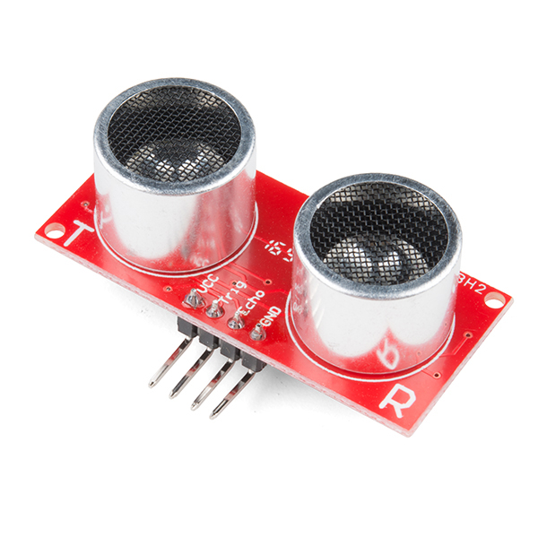
VL53L0X — ToF Laser (LIDAR Mini)
- Time-of-Flight com laser infravermelho
- I2C (endereço 0x29)
- Faixa: 30 mm a 1.2 m (até 2 m em modo longo)
- Precisão muito superior ao ultrassônico (~1 mm)
- Ideal: robótica, drone, nível de tanque

Fonte: Adafruit Learning System (CC BY-SA)
RCWL-0516 — Radar Doppler de Micro-ondas
- Radar Doppler 3.18 GHz
- Detecta movimento através de paredes/vidro
- Faixa: ~7 m
- Saída digital (HIGH = movimento por ~2-3 s)
- Não depende de calor (diferente do PIR)

Fonte: Tasmota Docs (GitHub, CC)
Comparação: Sensores de Distância
| Característica | HC-SR04 | VL53L0X | RCWL-0516 |
|---|---|---|---|
| Princípio | Ultrassom | Laser ToF | Radar Doppler |
| Faixa | 2 cm – 4 m | 3 cm – 1.2 m | ~7 m |
| Precisão | ~3 mm | ~1 mm | presença/ausência |
| Protocolo | GPIO (TRIG/ECHO) | I2C | Digital |
| Atravessa parede? | Não | Não | Sim |
| Custo | R$ 5-10 | R$ 15-25 | R$ 5-10 |
Bloco 4: Sensores Ambientais
Gás, solo, chuva, movimento, magnetismo e presença
MQ-2 — Gás Inflamável e Fumaça
- Detecta GLP, butano, propano, metano, álcool e fumaça
- Saída analógica (proporcional à concentração)
- Saída digital com limiar ajustável (potenciômetro)
- Aquecimento: ~20 s para estabilizar

Fonte: Random Nerd Tutorials (CC BY-NC-SA)
Soil Moisture Capacitivo — Umidade do Solo
- Mede umidade por capacitância
- Não oxida (diferente do tipo resistivo)
- Saída analógica: seco ~530, molhado ~260
- Tensão: 3.3 V – 5.5 V
- Ideal: irrigação automática de plantas
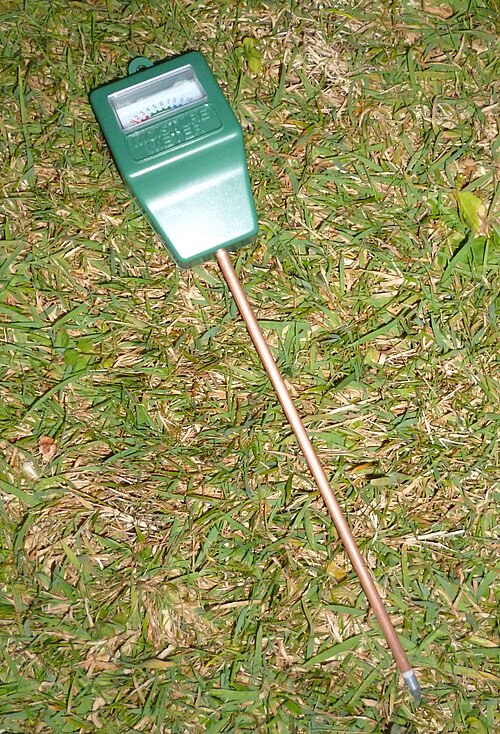
FC-37 / YL-83 — Sensor de Chuva
- Placa coletora com trilhas resistivas
- Água fecha o circuito → resistência cai
- Saída analógica (intensidade) e digital (limiar)
- Cuidado: proteger conexões da água!

Fonte: Random Nerd Tutorials (CC BY-NC-SA)
MPU-6050 — Acelerômetro + Giroscópio
- 6 eixos: 3 acelerômetro + 3 giroscópio
- I2C (endereço 0x68)
- Aceleração: ±2/4/8/16 g
- Giroscópio: ±250/500/1000/2000 °/s
- Usos: drone, robô balanceiro, IMU, detecção de queda
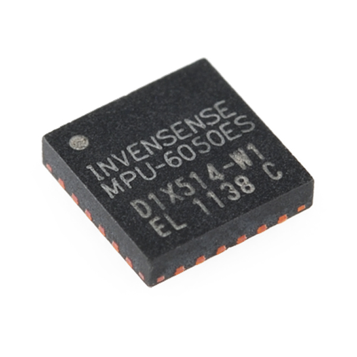
Sensor Hall — Campo Magnético
- US1881: digital (on/off ao detectar ímã)
- SS49E: analógico (intensidade do campo)
- Detecta presença e intensidade de ímãs
- Usos: velocímetro de bicicleta (ímã na roda), contador de voltas, sensor de porta
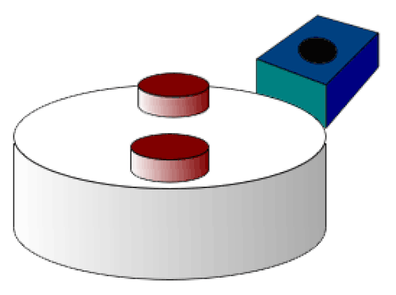
PIR HC-SR501 — Detector de Presença
- Detecta calor infravermelho em movimento
- Faixa: ~7 m, ângulo de 120°
- 2 potenciômetros: sensibilidade e tempo de hold
- Saída digital (HIGH = presença)
- Usos: alarme, iluminação automática
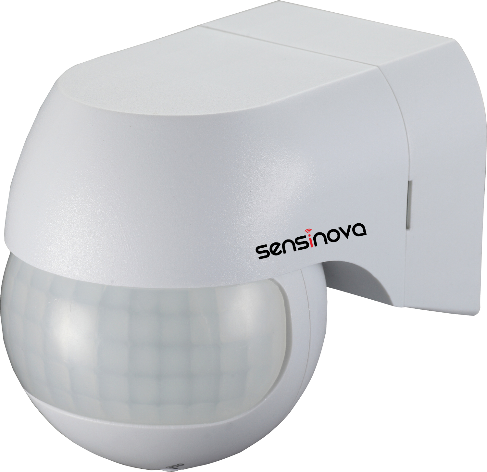
Bloco 6: Atuadores — Motores e Movimento
Controlando o mundo físico
SG90 — Servo Motor (0° a 180°)
- Rotação precisa: 0° a 180°
- Controle via PWM (Servo library)
- Torque: ~1.8 kg·cm @ 4.8 V
- Usos: braço robótico, fechadura, ventoinha direcional, lixeira automática
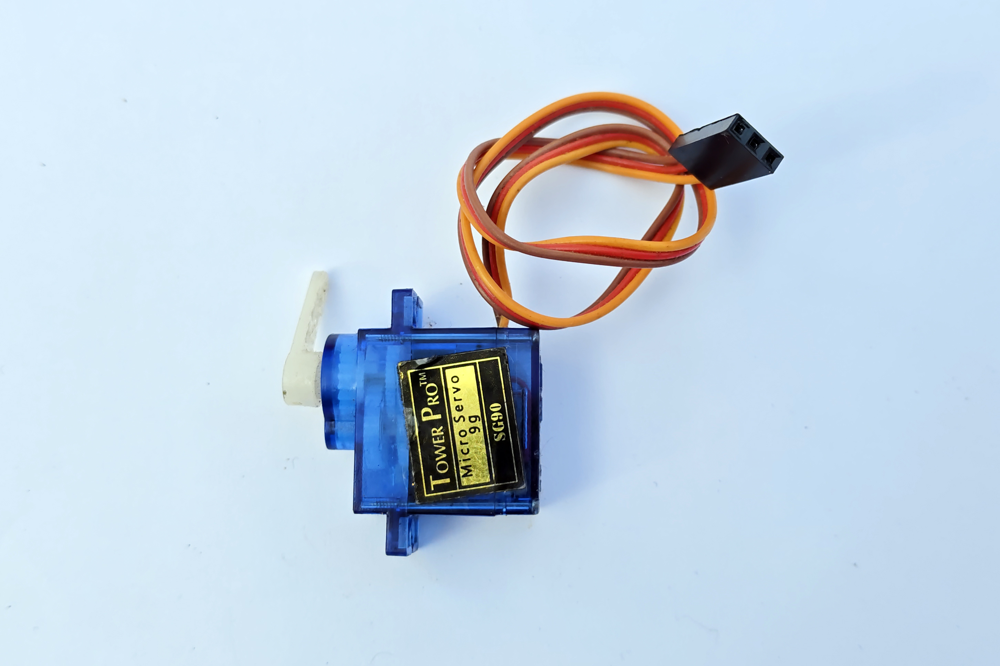
28BYJ-48 + ULN2003 — Motor de Passo
- Motor de passo 5 V, 4 Etapas
- Driver ULN2003 (Darlington array)
- 2048 passos/volta (modo half-step)
- Rotação precisa em passos discretos
- Usos: dispensador, cortina automática, mesa giratória
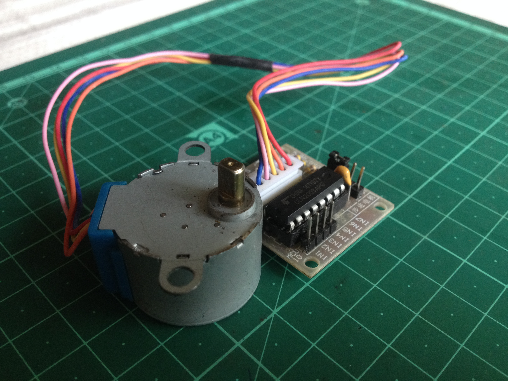
Solenóide e Válvula Solenóide
- Solenóide: eletroímã linear (puxa/empurra)
- Válvula solenóide: abre/fecha fluxo de líquido
- Controlados via MOSFET ou relé
- Atenção: consomem muita corrente (≥ 500 mA)
- Usos: fechadura elétrica, irrigação, dispensador
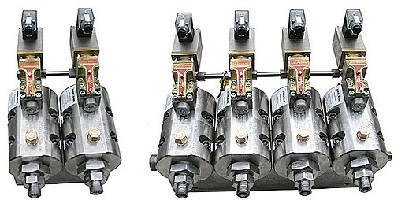
WS2812B — LED Endereçável (NeoPixel)
- LED RGB com controlador integrado
- 1 pino de dados controla N LEDs
- Cada LED: 16 milhões de cores, endereço individual
- Cascateável (daisy-chain)
- Usos: indicação visual, fita decorativa, displays
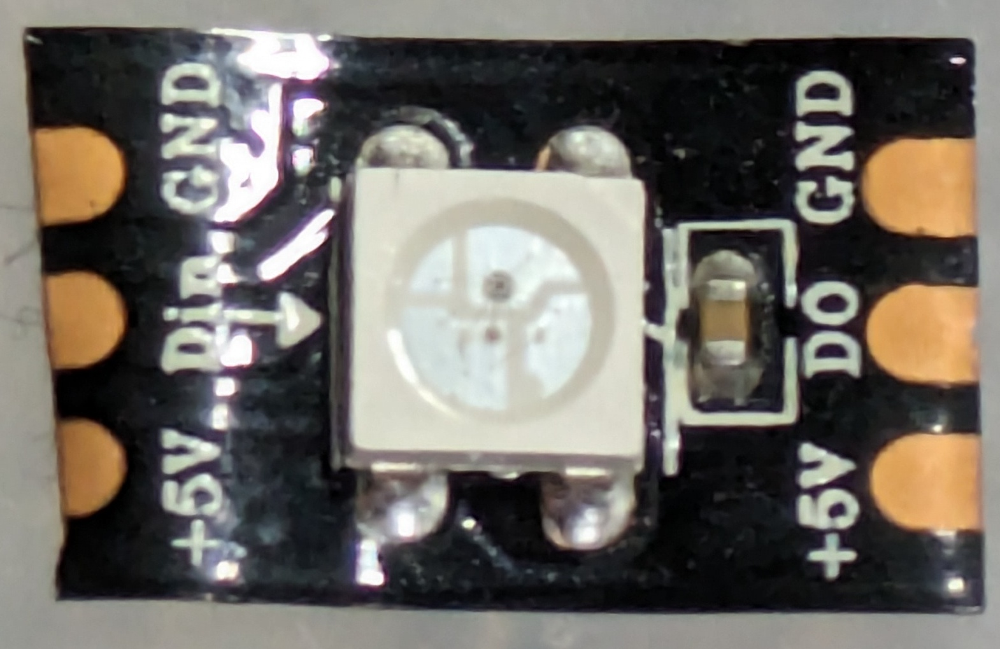
Bloco 8: Comunicação IoT
Protocolos locais e de longo alcance
Protocolos: I2C vs SPI vs OneWire vs UART
| Protocolo | Fios | Velocidade | Dispositivos | Exemplos |
|---|---|---|---|---|
| I2C | 2 (SDA + SCL) | 100-400 kHz | até 127 endereços | OLED, MPU-6050, VL53L0X |
| SPI | 4 (MOSI+MISO+SCK+CS) | até 10 MHz | ilimitado (1 CS por device) | SD card, LoRa, RFID |
| OneWire | 1 (dados) | ~16 kbps | múltiplos (ROM ID único) | DS18B20 |
| UART | 2 (TX + RX) | 9600-115200 baud | 1-1 (ponto a ponto) | GPS NEO-6M, HC-05 Bluetooth |
MQTT — Protocolo IoT por Excelência
- Publish/Subscribe via broker
- Leve: header mínimo de 2 bytes
- Tópicos hierárquicos:
casa/sala/temp - QoS: 0 (fire&forget), 1 (≥ 1 entrega), 2 (exatamente 1)
- Brokers: Mosquitto, HiveMQ, EMQX

Fonte: Random Nerd Tutorials (CC BY-NC-SA)
LoRa — IoT de Longo Alcance
- Modulação Chirp Spread Spectrum
- Alcance: 2-15 km (até 40 km com linha de visada)
- Baixa taxa: 0.3-50 kbps — ideal para sensores
- Frequências: 433/868/915 MHz (BR usa 915 MHz)
- Módulos: SX1278 (RA-02), TTGO LoRa32, RX470
- Usos: agricultura, meio ambiente, smart city

Fonte: Random Nerd Tutorials (CC BY-NC-SA)
Atividade: Sistema de Monitoramento Inteligente 🛰️
Em grupos de 3-4 alunos, escolham:
- 1 sensor de temperatura
- 1 sensor de ambiente (umidade, gás, chuva, presença...)
- 1 atuador (LED, servo, relé, solenóide...)
Justifiquem cada escolha considerando:
- Faixa de medição/atuação
- Precisão requerida
- Consumo de energia (baterias?)
- Custo
Resumo da Aula
Próxima aula: Definição e início do projeto final integrador